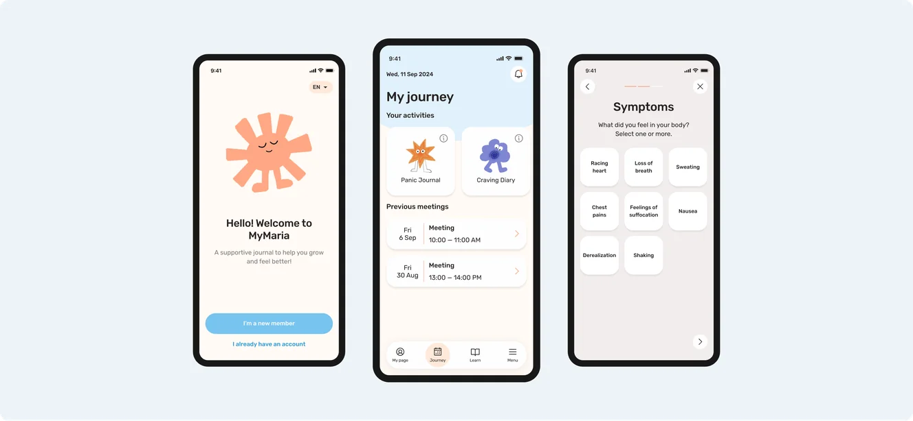
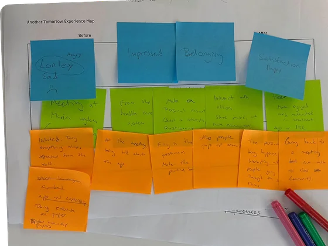
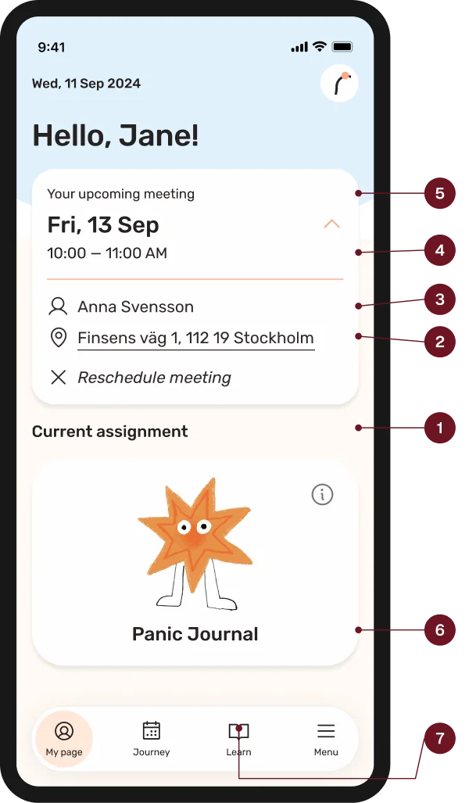

MARIA UNGDOM
Treatment support,
one small step
at a time.
A six-week client project with Maria Ungdom, a care provider supporting young people struggling with addiction. Informed by research into neurodivergent needs, we used TEACCH principles to make treatment activities clearer and easier to complete.
Project facts
Client-based school project
6 weeks
Role: UX Designer
Expert interviews · Journey mapping · Ideation · Usability testing

The problem
Young people in Maria Ungdom’s care often didn’t finish their treatment plans: material got lost, reminders were missing and tasks felt too hard.
What I did
Ran expert interviews, mapped the user journey and ran user tests that showed the onboarding needed to be longer, then fed the findings back into the team’s designs.
The result
A gentle, accessible app that breaks treatment into bite-sized steps, with customizable reminders and a longer onboarding shaped by testing.
My decisions
Four decisions my research drove.
Maria Ungdom wanted young people to engage more with their treatment plans. Our team designed an app that breaks treatment into small steps. As the UX designer, I ran the expert interviews and desk research, mapped the user journey, tested the prototype and designed the final presentation.
Design for neurodivergent needs
Why: Desk research showed about a third of young people in substance-related care also have ADHD, and the experts we interviewed confirmed it.
Meaningful support, not gamification
Why: Experts said the reward should be breaking free from harmful behaviour, not points or badges.
Say clearly that data stays private
Why: The journey map showed distrust as the first low point: “Will I be tracked?”
A longer onboarding, not a shorter one
Why: In usability testing, people found the intro too brief and wanted more guidance first.
The full process: research, journey map, design and testing
Research & design direction
Research that shaped
our design direction.
In the desk research and expert interviews we realized that there is meaningful co-occurrence between addiction and neurodivergency.
Desk research · Co-occurrence
Co-occurrence between addiction and psychiatric or neurodevelopmental disorders.
≈34% ADHD
34.2% of boys · 34.0% of girls
8.0–8.8% Autism
8.0% of boys · 8.8% of girls
Ages 10–17 in the studied care population: substance-related care in 2017, with psychiatric diagnoses recorded during 2016–2018. Socialstyrelsen, 2019, p. 39. These figures describe co-occurrence; they do not establish causation.
Design implication: make it easier to plan, understand the next step and begin treatment activities.
Inclusive design
Solve for one, extend to many.
We designed around neurodivergent needs for structure and guidance, with the intention of also supporting people who feel stressed, distracted or unfamiliar with treatment.
Microsoft Inclusive Design
Quotes from expert interviews
“For challenging tasks, break them down into smaller, more manageable steps.”
“Help the individual see that the reward lies in breaking free from harmful behaviors, rather than relying on external factors.”
“Many of the young people dealing with addiction also experience neurodivergencies.”
THREE FINDINGS SHAPED THE PRODUCT
Neurodivergent needs
Our desk research highlighted an association between ADHD and substance use disorders. This led us to consider attention, planning and task initiation in the design.
Task size
Large assignments create avoidable friction. Challenging activities should be divided into manageable steps.
Autonomy
Support should not feel like monitoring. Reminders, progress and private content needed to remain under the user’s control.
From external rewards
to meaningful support.
We initially explored Duolingo-inspired gamification. Expert interviews prompted us to prioritise the personal value of treatment activities over external rewards. Structure and visual guidance became our way to help users begin.
Journey mapping
Finding friction across
the full treatment journey.
I created a journey map covering recommendation, download, onboarding, reuse and retention. Because we did not have direct access to target users, the persona was treated as a research-informed proto-persona rather than a validated user persona.

Journey highlights
How Alex feels at each stage
-
01
Recommendation
Resistant
Doing
Hears about the app from his therapist and asks questions about it.
Feeling
“Why should I download an app on my phone? Will I be tracked?”
Pain point
Doesn’t trust the app and hesitates to download it.
Opportunity
Say clearly that data stays confidential and nothing is tracked outside the app.
-
02
Download
Uncertain
Doing
Finds the link on Maria Ungdom’s website and downloads it from the app store.
Feeling
“I hope this app works for me.”
Goal
Download without complications and feel like a step forward in treatment.
Opportunity
Keep the path from link to first screen short, calm and safe-feeling.
-
03
Onboarding
Doubt → hope
Doing
Signs in with BankID, follows setup and sets reminders for tasks and meetings.
Feeling
“Is it going to work? I hope it makes treatment easier.”
Pain point
Doesn’t understand how the app works, or when reminders suit him.
Opportunity
Short, clear explanations and fully customisable notifications.
-
04
Reuse
Mostly positive
Doing
Does daily tasks, tracks progress and reschedules meetings in the app.
Feeling
“This is cute and helpful, but I hate doing tasks every day.”
Pain point
Long shifts leave little energy to engage with treatment.
Opportunity
Ask users and therapists for feedback to keep refining the experience.
-
05
Loyalty & Retention
Accomplished
Doing
Keeps journaling after tasks end and fine-tunes smart reminders.
Feeling
“I feel a sense of accomplishment.”
Goal
Feel more involved in, and in control of, his treatment.
Opportunity
Smart reminders that adapt as his routine settles.
Design application
From research to interface
The TEACCH method: seven questions.
- What should I do?
- Where should I be?
- Who should I be with?
- How long will it last?
- What will happen next?
- What do I need to have?
- Why should I do this?

TEACCH principles in practice
One activity.
Clear, manageable steps.
The current assignment gives users a clear starting point. Panic Journal then separates the activity into situation, symptoms and intensity, with one focus at each stage.
Visual cues connect the activity across screens, while the final message acknowledges the user’s effort. These choices were intended to make the process easier to follow.
Panic Journal walkthrough
Reminders in practice
Reminders that
fit each user.
Missing or forgotten reminders were one of the main reasons young people fell behind on their treatment. In MyMaria, users choose between smart and manual reminders and decide what they are reminded about.
Task reminders and meeting alerts can be set up together with the therapist, so reminders support the treatment plan instead of adding pressure.
Notification settings walkthrough
Testing & iteration
Testing challenged our assumption:
shorter is not always simpler.
In peer usability testing, approximately seven classmates tested the prototype. Their feedback showed that the introduction needed more guidance and reassurance.
Before · Peer feedback
The onboarding felt too brief. Users needed more explanation before entering the app.
After · Design revision
We added introductory steps and friendly graphics to explain the app and provide more support.
The revised onboarding
Four short intro screens now explain what the app does (keeping track of treatment, staying organised, reflecting and setting goals) before asking users to create a profile.
Takeaway: assess how well a flow supports understanding, not only how few steps it contains. Next, test the revised onboarding with intended users to assess clarity, effort and reassurance.
Accessibility & inclusion
Designed for neurodivergent needs
Structure and guidance for young people with ADHD or autism, so the app also supports anyone who feels stressed or distracted.
Small, clear steps
TEACCH principles turned into interface: treatment broken into bite-sized steps with customisable reminders.
Onboarding that explains
Testing showed shorter is not always simpler, so four short intro screens explain the app before sign-up.
Outcome & reflection
The simplest answer
turned out to be
the strongest one.
Other teams pitched ambitious concepts like gamification and AI assistants. Our simple, research-based app was rated the strongest solution by Maria Ungdom and our teachers, because it fit how their young people actually live.
What I learnedResearch beats novelty: let evidence decide, even when the answer is simple. And inclusive design is good design, structure and small steps built for neurodivergent users made the app easier for everyone.